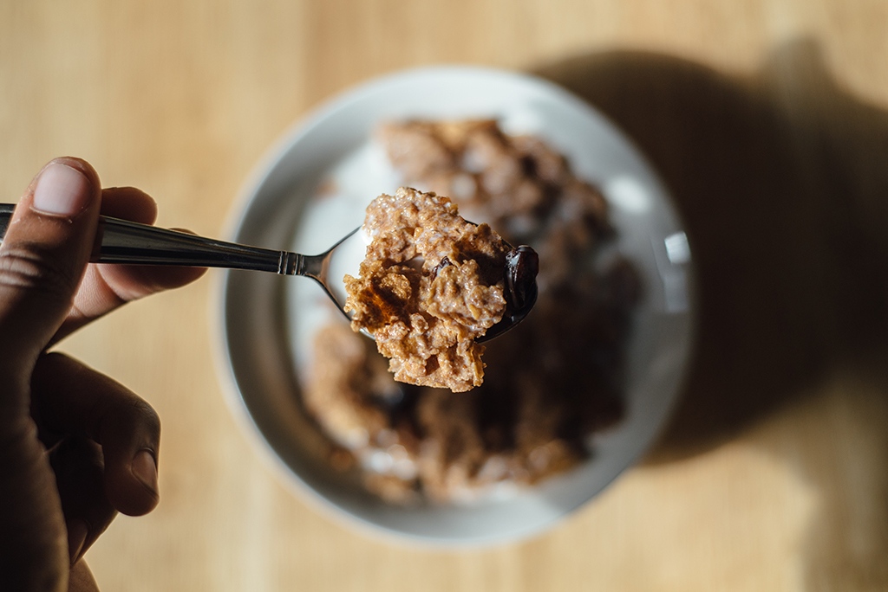

Las impresoras 3D de comida, aliadas en alergias e intolerancias
Nereida Carrillo
Las impresoras 3D se abren camino en ámbitos muy diferentes. Estas máquinas, además de emplearse para imprimir piezas en el sector industrial, fabricar prótesis para la medicina o elaborar las figuras más diversas de decoración, también están entrando en la cocina. De momento, en las cocinas de grandes restaurantes y catering, pero en un futuro próximo, aspiran a ocupar un espacio entre la tostadora y la cafetera y convertirse en un electrodoméstico más con finalidades gastronómicas.
Con esta nueva herramienta puedes diseñar elementos, volúmenes y texturas para darles una vuelta más a las diferentes propuestas y los platos que elaboran grandes restauradores
, asegura el nutricionista Àlex Vidal, profesor colaborador de los Estudios de Ciencias de la Salud de la UOC. La impresión 3D de comer ya es una realidad, aunque, como señala Vidal, es una tecnología muy nueva. Los pronósticos, no obstante, son alentadores. En un estudio hecho en octubre, la consultora Gartner auguraba que en 2016 se venderían más de 455.000 unidades de impresoras 3D, una cifra que de cara a 2020 se incrementará, según los cálculos de la consultora, hasta exceder los 6,7 millones de unidades. Las impresoras de comer se incluyen en el ascenso general de esta tecnología.
Menús sin gluten, más fáciles
Aunque todavía no estén implantadas entre el consumidor final, Vidal ve ventajas en el caso de alergias e intolerancias alimentarias.
Cuando haya algo que se tenga que controlar mucho, como puede ser una alergia alimentaria o una intolerancia al gluten, puede ser útil. Puede ayudar a esquivar algún nutriente
, afirma el nutricionista y profesor de la UOC. Así, estas máquinas pueden ser aliadas en casos como la celiaquía u otros problemas con ciertos alimentos.
Varias empresas se han interesado por la impresión 3D de comer. Una de ellas es Natural Machines, empresa emergente con sede en Barcelona que comercializa la Foodini. Esta máquina funciona con cápsulas e imprime una gran variedad de alimentos, tanto dulces como salados. Fuera de nuestras fronteras, otras compañías también se han lanzado a trabajar esta técnica, como por ejemplo 3D Systems, que ha ideado la Chefjet y la Chefjet Pro y ha impulsado el 3D Culinary Lab para estimular la innovación gastronómica. También hay que mencionar la compañía ORD Solutions, que ha impulsado la RoVaPaste Hybrid Food 3D Printer o la empresa Systems and Materials Research, que prepara un modelo que pueda nutrir de manera sana a los astronautas.
Abaratar el precio e introducir la cocción
Vidal lamenta que aunque pueda ser útil para determinados grupos de personas, de momento esta tecnología no es accesible para todo el mundo. Una de las razones de que todavía no estén implantadas es con toda seguridad su precio, que supera en muchos casos los 1.000 euros. Por eso, las encontramos sobre todo en la restauración y principalmente en establecimientos innovadores y de cierto nivel. El nutricionista y profesor de la UOC apunta que si bien puede acabar siendo un electrodoméstico más, como son los robots de cocina, tiene algunos valores diferenciales.
Puedes trabajar con mucho detalle y utilizar ingredientes aislados. Puede ser útil para hacer cosas que, con otras herramientas, no podrías conseguir

¿Se pueden imprimir los cereales a medida?
La mayoría de impresoras 3D de comer funcionan de manera similar a una manga pastelera. Van añadiendo capas y capas de comer. Es muy habitual que se empleen con ingredientes cremosos y no duros, como por ejemplo chocolate, crema de queso, pasta, helado, mermelada, mostaza o crema de cacahuete; todavía no se puede imprimir con todo tipo de ingredientes. Este es un reto que tiene todavía la industria, junto con la introducción de la cocción, puesto que la mayoría de máquinas no cuecen y se necesita acabar el plato en horno, sartén o cacerola.
Para imprimir una pizza o un pastel, hay que darle a la máquina la materia primera, programarla y esperar que prepare el plato, un proceso que puede tardar solo cinco minutos o hasta veinte o treinta, dependiendo de la receta y la dificultad. En muchos casos, las impresoras 3D se emplean y tienen éxito en la repostería. Vidal también recalca las ventajas de este tipo de máquinas para los profesionales de los dulces.
La pastelería siempre es muy exacta ‒explica el nutricionista y profesor de la UOC‒. A esa necesidad le veo un sentido. Ahora bien, lo de imprimirse la cena, no lo veo